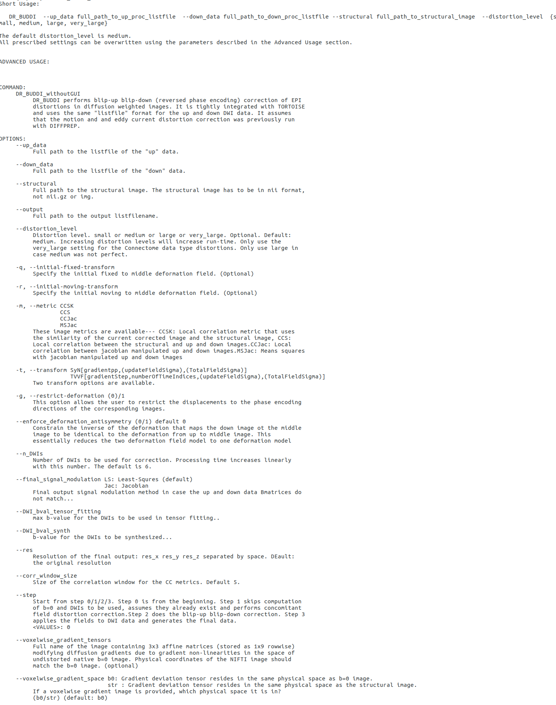
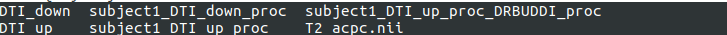
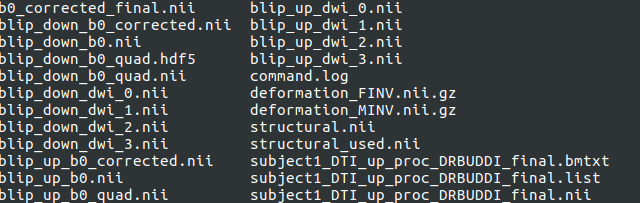

10. STEP 3.1 (after DIFFPREP):DR-BUDDI¶

If you have acquired data with opposite phase encoding direction, please skip the EPI correction in DIFFPREP and do the DRBUDDI correction as described below.
DR-BUDDI performs EPI distortion correction using two datasets with opposite phase encoding directions.
An example scenario: If you have a test dataset with Subject1_DTI_UP (blip up) and Subject1_DTI_down (blip down), both will have to go through DIFFPREP processing separately to generate Subject1_DTI_up_proc.list and Subject1_DTI_up_proc.list that are generated within each of the up and down proc folders. These are the inputs to DR-BUDDI together with the structural image (for best results, it is best to use a T2 W fat suppressed dataset).
Note
Two additional parameters have been introduced in DRBUDDI3.1 which were not present in the 3.0 version. They are the gradient non linearity correction. If you intend to use these correction measures, you will have to use 3.1 for all import and DIFFPREP processing as well.
The screenshot below shows the DRBUDDI help file for version 3.1
The following screenshot will show the outputs from DRBUDDI processing. The folder structure will be as follows:
| Folders | Description |
|---|---|
| DTI_down | folder containing the raw down data pre-import |
| DTI_up | folder containing the raw up data pre-import |
| subject1_DTI_up_proc | folder generated post import, renamed to add a prefix ‘subject1_DTI’. It contains all the files decribed in the DIFFPREP outputs sections. In addition, after running DRBUDDI, there will be files ending in _’DRBUDDI’. These are the ‘DRBUDDI corrected UP’ files. This is not the final DRBUDDI output but only the output before combining with the down data. |
| subject1_DTI_down.proc | The same decription as for the subject1_DTI_up_proc, except the file names here will be subject1_DTI_down. |
| subject1_DTI_up_proc_DRBUDDI_proc | This is the final DRBUDDI folder that contains all the files that will be decribed in the ‘outputs of DRUDDI’ section. |
| T2_acpc.nii | The subject specific T2 file that will be used in the DRBUDDI processing. Please note, this file can exist anywhere but has been included here, in the main folder, to be organised. |
10.1. DRBUDDI outputs¶
| Outputs of DIFFPREP processing | Description |
|---|---|
| command.log | test file that describes the command used in DRBUDDI processing |
| blip_up_b0.nii | Uncorrected b0 from ‘up’ data |
| blip_down_b0.nii | Uncorrected b0 from ‘down’ data |
| blip_up_dwi_* | synthesized DWIs generated from the ‘up’ data. Default will be four nii files will be generated from dwi_0 to dwi_4 as the disortion level set is ‘medium’. For disortion setting ‘large’,six nii files will be generated from dwi_0 to dwi_5 will be generated. |
| blip_down_dwi_* | synthesized DWIs generated from the ‘down’ data. Default will be four nii files will be generated from dwi_0 to dwi_4 as the disortion level set is ‘medium’. For disortion setting ‘large’,six nii files will be generated from dwi_0 to dwi_5 will be generated. |
| blip_up_quad | uncorrected ‘up’ b0 that now is at the resolution of the structural_used.nii |
| blip_down_quad | uncorrected ‘down’, b0 that now is rigidly registered to the structural_used.nii |
| blip_up_b0_quad.hdf5 | transformation binary text file |
| blip_up_b0_quad.hdf5 | transformation binary text file |
| deformation_FINV.nii.gz and deformation_MINV.niig.gz | deformation fields generated after b0’s are registered to structrual |
| structural.nii | original structural file input when running DRBUDDI. The final DRBUDDI outputs will be in the space of the input structural file. |
| structural_used.nii | The structural.nii is now in the space of the ‘up’ b0.nii. Please see the note below for additional details |
| blip_up_b0_corrected.nii | ‘up’ b0 now is corrected for distortions using information from the structural_used.nii |
| blip_down_b0_corrected.nii | ‘down’ b0 now is corrected for distortions using information from the structural_used.nii |
| b0_corrected_final.nii | the geometric mean of the ‘blip_up_b0_corrected.nii’ and ‘blip_down_b0_corrected.nii’. |
| subject1_DTI_up_proc_DRBUDDI_final.bmtxt | the final bmtxt of the corrected data in the space of the structural.nii i.e the space of the strutural file that you gave as input when running DRBUDDI. |
| subject1_DTI_up_proc_DRBUDDI_final.list | the final list file that points to the final bmtxt and final nii file. You will need to use |
| subject1_DTI_up_proc_DRBUDDI_final.nii | the final combined up and down diffusion data in nii format |
Note
In TORTOISE 3.1 version the final DRBUDDI outputs in DRBUDDI_proc folder will be in the final space of the structural provided during processing i.e _finalDRBUDDI will be in the space of structural.nii. The intermediate files such as up and down quad, up and down corrected and final b0 will all be in the space of structural_used.nii. The structural_used.nii in fact is in the space of the up_b0.nii space. So, when you visualize these intermediate files, you may find that they may not be in the standard orientation that you would expect the final images to be in. Only the final images will in the final orientation.
10.2. If UP and DOWN bmtxts or number of volumes do not match¶
If your data has up and down bmtxts that do not match, DRBUDDI3.1 will run but will output an warning message in the terminal indicating that the up and down data will not be combined. If the number of volumes and bmtxts do not match, DRBUDDI will now automatically output the geometrically corrected and signal manipulated versions of both up and down data.